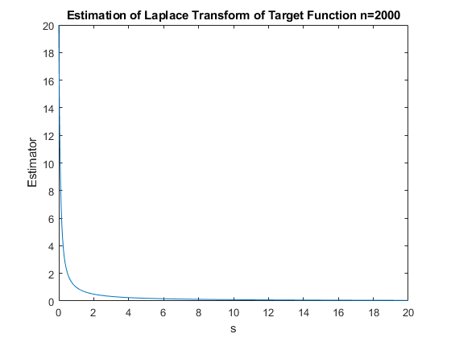
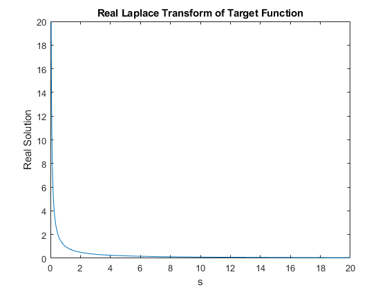
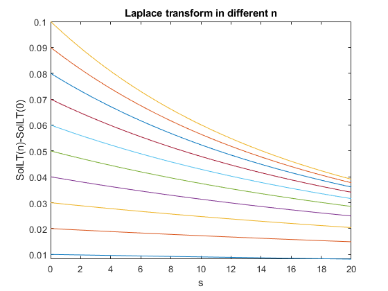

Contents
function Numerical_Laplace_Transform_Estimator
% NUMERICAL_LAPLACE_TRANSFORM_ESTIMATOR helps users to obtain approximation % of Laplace transform of target functions, which are not transformable in % current system. syms x; syms s;
Explanation
%{ This code aims to deal with functions that cannot be transformed by built-in Laplace transform function. This program cannot provide the real solution, but we provide numerical solutions for users to deduce the real solution with higher efficiency and accuracy. Even if the solution is hard to be deduced, the numerical solution also provide acceptable approximation. Laplace Transform of TF = SolLT(inf)-SolT(0) but we cannot use inf to get the result, MATLAB cannot calculate that. However, we can type in large n to estimate the real result. In this case, we use n = 2000 to make approximation. If you want to increase the accuracy, use larger "ind" in @AnsLT, or use larger n. For Example: %} figure; LapTF = SolLT(2000)-SolLT(0); fplot(LapTF, [0,20]); title('Estimation of Laplace Transform of Target Function n=2000'); xlabel('s'); ylabel('Estimator'); figure; RealLap = laplace(1,x,s); fplot(RealLap, [0,20]); xlim([0,20]); ylim([0,20]) title('Real Laplace Transform of Target Function'); xlabel('s'); ylabel('Real Solution'); 
Making Estimation on the Real Solution
%{ We can type in numerous small n to see how the function changes, in order to guess the form of Laplace transform of TF. After making assumption, setting n as infinity, we can get the result. Below is an Example: %} figure; for k=1:1:10 fplot(SolLT(k)-SolLT(0),[0,20]); hold on; end title('Laplace transform in different n'); xlabel('s'); ylabel('SolLT(n)-SolLT(0)');
end function AnsLT = SolLT(n)
Input the Parameters Needed for Laplace Transform
syms s; syms x; TF(x) = 1 + 0*x; %Function that needs to be transformed ind = 100; %For integration accuracy, higher leads to more accuracy IC = 2; %Initial Value of the integration if n > 0 AnsLT = SolLT(n-1) + (TF(n/ind))*exp(-(n/ind)*s)*(1/ind); else AnsLT = IC; %Do not change this line end
end